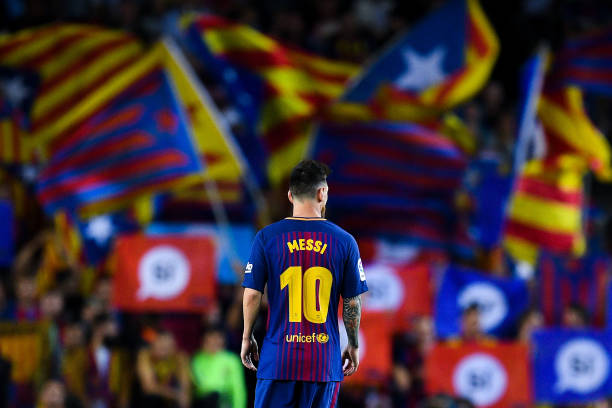
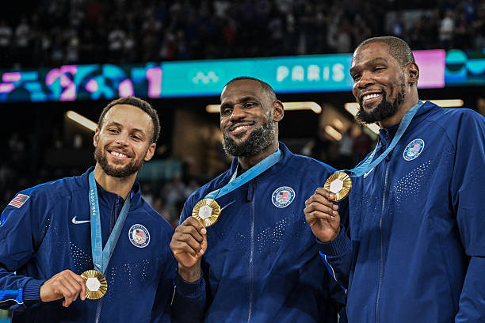
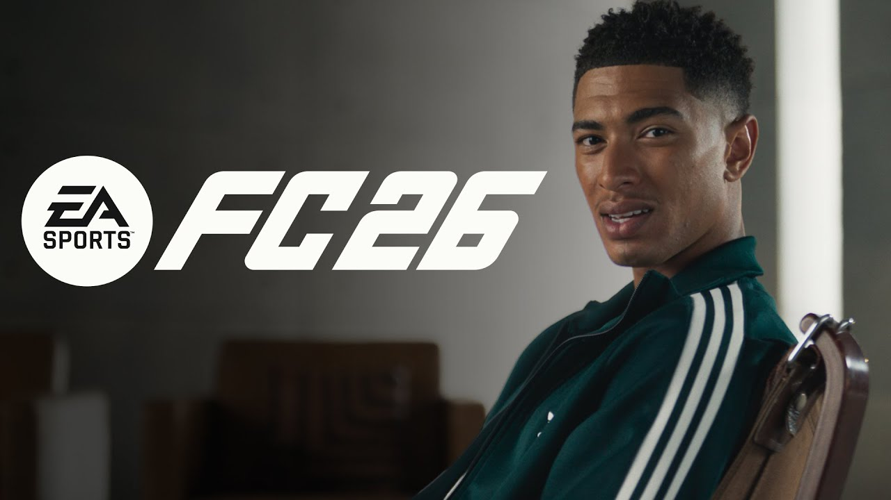
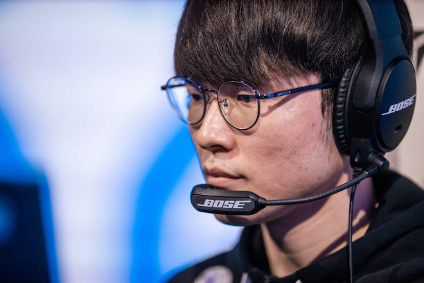
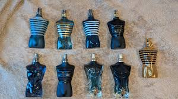

Tarzımı, hobilerimi ve hayat ritmimi belirleyen detaylar.
Konserine hazırlandığım Kanye West ve favori sanatçım Drake'in efsane albümleri:
API'den veriler çekiliyor...
Futboldan çok bahsettim ama ilgi alanlarım kısmına da koymazsam olmazdı. Galatasaray ile birlikte Avrupa Futbolunu izlemeyi takip etmeyi hayatımın bir parçası haline getirdim. Ayriyetten Messi gibi bana göre tarihin en iyi futbolcusununda Amerikadaki maçlarını da takip ediyorum. En çok sevdiğim futbol figürleri Messi, Osimhen, Uğurcan Çakır, Neymar ve Salah...

Basketboldan bahsetmesem olmazdı hem spor olarak hem de moda kültürü olarak takip etmekten zevk alıyorum. Maçlar ABD saatine göre oynandığı için maalesef Türkiye'de gece saatlerine denk geliyor. Playofflar dışında çok fazla izleme şansım olmuyor. Desteklediğim takımlar Alperen Şengün etkisiyle Houston Rockets ve Stephen Curry etkisiyle Golden State Warriors.

League of Legends: Sihirdar Vadisi'nde sadece bireysel yetenek değil, makro oyun bilgisi ve anlık takım koordinasyonu da şart. En ufak bir hatada bile maçı kaybedebilirsin; bu yüzden her rol, her an ve her hareket LoL'de aşırı önemli. Bu stresli yapısı, onu hem sinir bozan hem de bağımlılık yapan en sevdiğim oyun kılıyor.
FC26: Futbol tutkumu sanal sahaya taşımamak olmazdı. Ultimate Team'de kadro mühendisliği yapmak ve rekabetçi modlarda o stresi, o siniri yaşamak hem eğlenceli hem de ciddi anlamda bağımlılık yapıcı.


Sadece güzel kokmakla kalmayıp, girdiğim ortamda ben buradayım diyen kokulara özel bir ilgim var. Niş ve Koleksiyon ürünleri koklamayı denemeyi çok seviyorum ama fiyatlar tabi çok pahalı olduğu için çok fazla ürünüm yok ama ilerde koleksiyonumu genişletmek istiyorum. Kalıcılık benim için bir parfümdeki en kritik detaydır.
